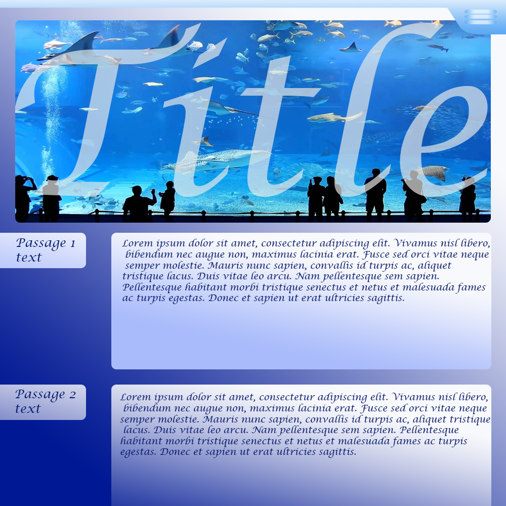
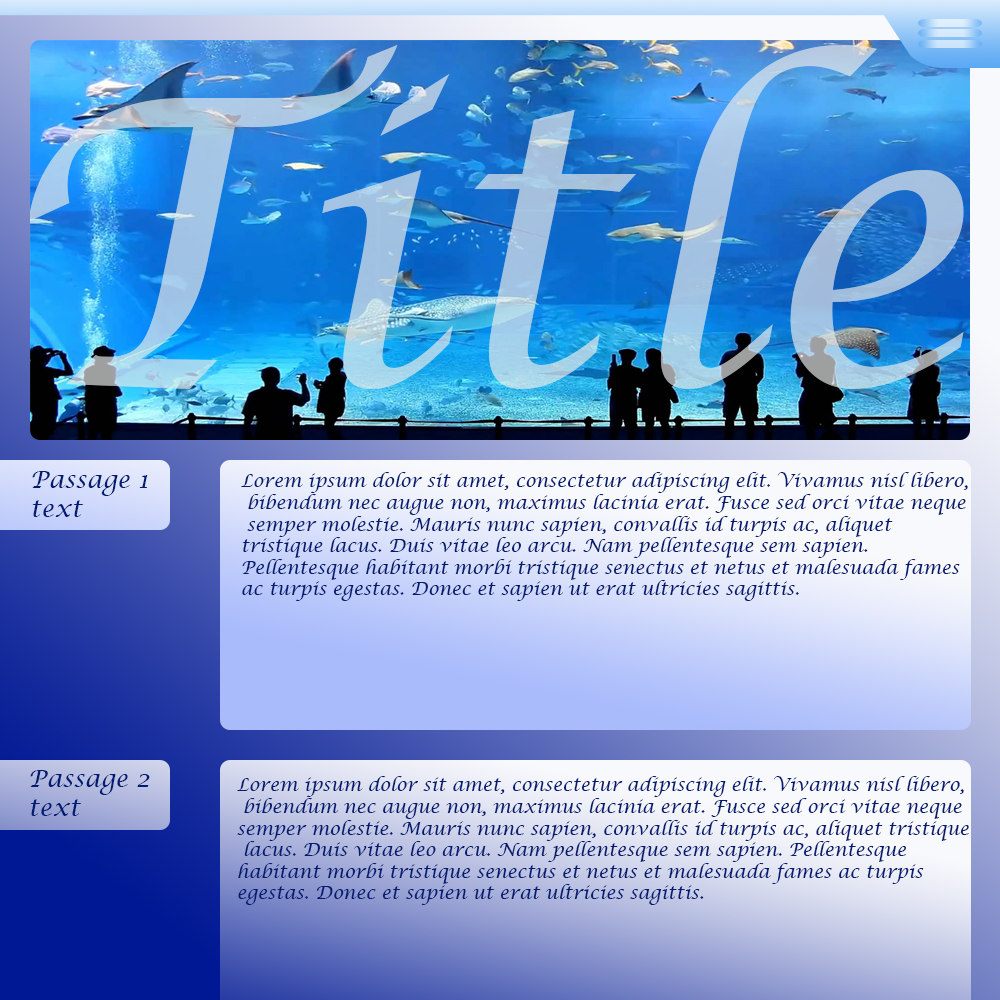
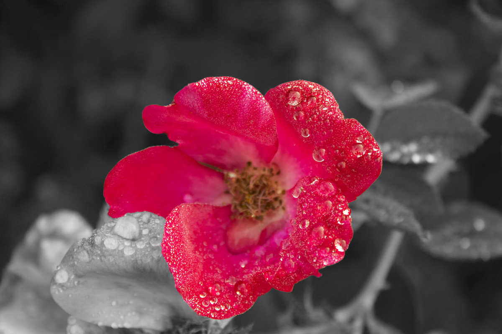
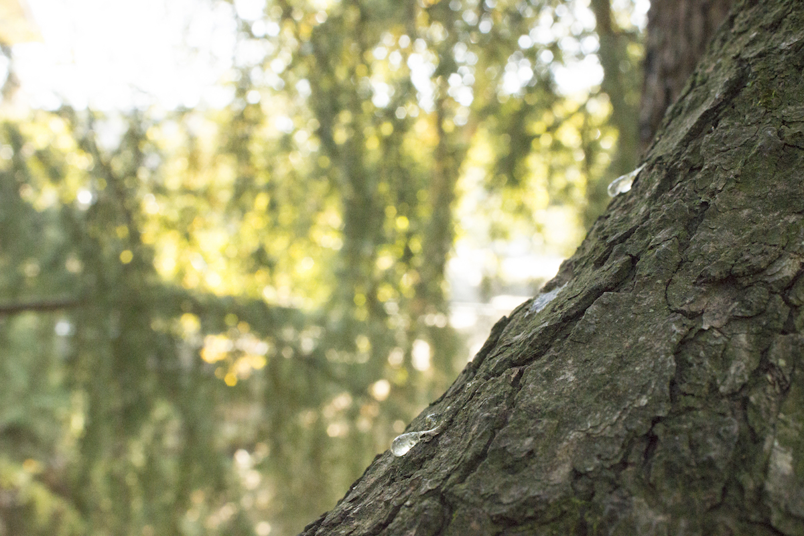
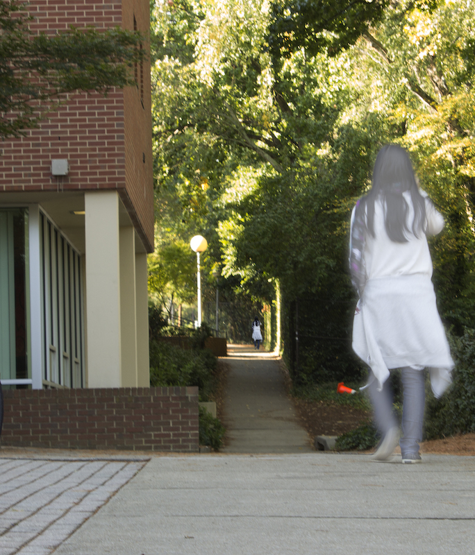
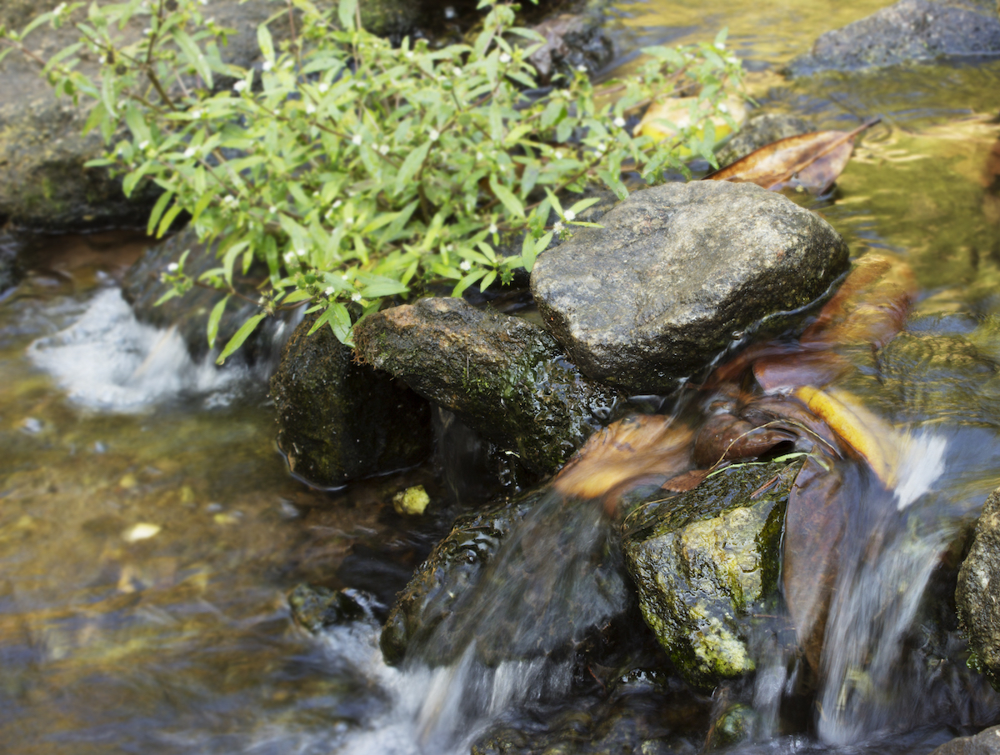

NMIX 4111
Welcome to my new media production page
About the class
New Media Design focuses on the application of fundamental design principles to create user-friendly new media projects in an aesthetically pleasing manner. Students explore UI and UX design topics and emerging fields such as interaction design and motion graphics.
Professor
My professor for this class is Chris Gerlach. A link to his site is attached here.
Tools and Theory
Our first segment was focused on Design tools and theory. We discussed attributes of design thinking, along with going through a few examples. Next we learned about the basics of Adobe Photoshop and Adobe Illustrator. My final project consisted of creating a website based upon the theories we learned, and using the tools we learned. Version 1 and 2 of my webpage is shown below, both were created using Adobe Photoshop.
 

Photo and Video
Our second segment was focused on photography. We learned about several different photography rules such as: Rule of thirds, Golden ratio, Rule of odds, Leading lines, etc.. Next we learned about the different settings on a DLSR camera, and used one to take pictures. The last bit of this section was spent diving deeper into Adobe Photoshop and applying the rules we learned on the pictures we've taken. Below and to the right are a few photoes I've taken.
   Typography
Our third segment focused on Typography. We learned about the Anaomy, Genealogy and Terminalogy of Text. This was followed by learning about the Legibility/Readability of text on different mediums. For our final project we created a few certificates for the New Media department. Mine are shown below.

![My second design is an attempt to make a design similar to one I found online. I really like how they had the geometric shapes on the top left hand corner, however I did not like the original colors. The new colors I chose resembles the New Media Institute better. Next I created some lines to symbolize the progress in creating this design. This is the first design I did, where I altered the colors in the word “New Media Certificate”. Along with this I chose a portrait orientation because the design is more appropriate for this layout.](NMIX/NMIX4111Photos/certificateDesign2.png)
![For my fourth design I wanted to remove a portion of the blocks I created to simplify the design. Furthermore I decreased the opacity to increase the emphasis on the words “New Media Certificate”. I put the words “New Media certificate” onto 2 lines for this design to emphasize it, since it should be the main focus of the certificate. In addition to this, I added a line for First and Last name onto this certificate since the original certificate had an area for First and Last name. This would allow the New Media staff to include student and staff names on the certificate.](NMIX/NMIX4111Photos/certificateDesign4.png)
![My last design, I wanted to go back to a simplistic design. I had the main body of text on the top-right and the “New Media Certificate” in the middle of the page. I changed the font to Halvetica since the x-height made this font more ‘box-y’. I kept the text elements from the previous design since I believe they are necessary for this certificate. Lastly I imported a brush from the web, and used it to draw the design on the background. To emphasize the words “New Media Certificate” I added a white banner and decreased the opacity. This allows the user to easily read the focus of this certificate “New Media Certificate” without hiding the background too much.](NMIX/NMIX4111Photos/certificateDesign5.png)
UX/UI & Final Project
Our last segment included the User Experience and User interface, along with our final project. We talked about the steps of creating a product, from ideation to creating the storyboard. Next we learned about wireframing, and created our own wireframe using marvel.com. Afterwards we focused on designing a good user experience on the web. We wrapped up this segment, and the class, with our final project. For our final project, we created a product, and advertised this product. I've attached our presentation and links to our product below.

Our products webpage
Our products wireframe